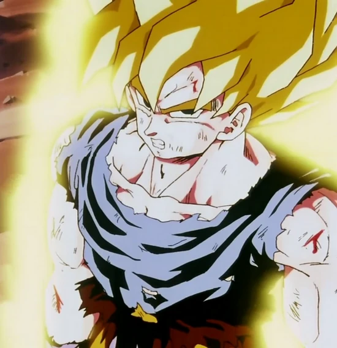

O que é ter um coração puro?
Mateus 5:8: “Bem-aventurados os puros de coração, pois eles verão a Deus.”
Essa é uma pergunta difícil de responder em palavras — talvez até impossível de medir. Tenho buscado entender o que é pureza de coração há bastante tempo, porque, se os puros verão a Deus, então ser puro é alcançar algo profundo e transformador. E, nessa busca, percebi que o melhor caminho é observar o oposto — o que acontece quando alguém perde essa pureza. Por isso para entender a pureza de coração vamos analisar a Não pureza.
Como Goku consegue a nuvem voadora Kintoun?
No início do mangá clássico de Dragon Ball, há uma cena simples, mas cheia de significado. Goku conhece o Mestre Kame depois de ajudar sua tartaruga a voltar ao mar. Em agradecimento, o velho eremita lhe oferece um presente lendário: Kintoun, a famosa nuvem voadora. Mas há uma condição — só pode montá-la quem tem um coração puro.
Quando o Mestre Kame tenta subir na Kintoun, ele atravessa direto e cai no chão. A nuvem simplesmente o rejeita. Mesmo sendo um mestre, ele já não tinha mais a pureza necessária — talvez pelas tentações ou pelas falhas humanas que todos nós carregamos. Em seguida, Goku sobe com a empolgação de uma criança... e a Kintoun o aceita sem hesitar.
Essa cena simples revela uma verdade profunda: pureza de coração é estar livre de segundas intenções. É agir com bondade, curiosidade e alegria — sem esperar nada em troca.
Mateus 7:12:“Portanto, tudo o que vós quereis que os homens vos façam, fazei-o também vós a eles; porque esta é a lei e os profetas.”
Por que Goku consegue subir na nuvem voadora — e o Mestre Kame não?
Bulma, encantada com a cena, observa empolgada enquanto Goku faz manobras incríveis na Kintoun. (E, convenhamos, quem não ficaria empolgado vendo isso?)
Tomada pela curiosidade, ela pede ao eremita uma nuvem também. O Mestre Kame, espirituoso como sempre, promete que dará uma — mas com uma condição: ela precisaria presenteá-lo com sua calcinha.
Nesse momento, a tartaruga olha para o mestre e diz calmamente: “Agora entendo por que o senhor não consegue subir na nuvem…”
E é aí que mora a sabedoria escondida nessa cena: a pureza não está em ser perfeito, mas em não usar a malícia como lente para enxergar o mundo. Talvez por isso Bulma também não consiga subir na Kintoun — porque, tomada pelo interesse, ela mostra muito mais do que deveria, na esperança de conseguir algo em troca. Um comportamento oposto ao de Goku, que recebeu a nuvem justamente por agir sem intenção alguma.
Por que Goku tem o coração puro?
A pureza de Goku está em suas intenções. Mesmo sem perceber, ele é um reflexo do bem em sua forma mais simples.
Quando criança, foi enviado à Terra com a missão de destruí-la. Mas, após um acidente, perdeu a memória — e com ela, o propósito maligno que carregava. Sem lembranças, foi criado com amor e disciplina por seu avô, e isso o transformou. Desde então, Goku vive para proteger o planeta e superar a si mesmo — nunca os outros.
Ao longo do mangá e do anime, vemos Goku se desafiando e ultrapassando seus limites a cada saga:
- Ele sobe até a Torre de Karin para enfrentar Tao Pai Pai.
- Treina no Templo do Kami para vencer Piccolo.
- Aprende com o Senhor Kaioh antes de enfrentar Vegeta.
- Treina em gravidade aumentada na nave para derrotar Freeza.
- E na Sala do Tempo, busca o limite de si mesmo para enfrentar Cell — e acaba descobrindo o poder oculto de seu filho, Gohan.
Em todas essas jornadas, Goku não busca matar, mas evoluir. Como o próprio Vegeta reconhece na Saga Majin Boo:
“Kakarotto, você era diferente de mim. Não lutava só pra vencer — sempre ultrapassou os limites da sua força pra não perder de ninguém! Por isso nunca se atreveu a matar seus adversários… Eu sei por que nunca se atreve a me matar. ...Kakarotto, você é o melhor!”
Essa é a essência do coração puro: lutar sem ódio, vencer sem destruir.
Entendendo a pureza de coração
Agora vamos fazer uma dinâmica simples para visualizar melhor a pureza de coração.
Imagine uma linha reta com dois pontos nas extremidades. Vamos chamar o ponto esquerdo de Goku e o ponto direito de Mestre Kame:
Goku ____________________________ Mestre Kame
Agora, bem no meio dessa linha, visualize um ponto de equilíbrio:
Goku _______ | _______ Mestre Kame
Você está ali, nesse traço do meio.
Agora imagine que Bulma está te oferecendo a calcinha dela. Se o seu nariz jorrou sangue igual ao do Mestre Kame e sua mente se perdeu em pensamentos sexuais, você saiu do ponto de equilíbrio e ficou mais perto do Mestre Kame — ou seja, mais próximo do desejo e mais distante da pureza.
Goku ____________ | __ Mestre Kame
Mas se você apenas observou o pensamento sem malícia, sem julgamento, você se aproximou do lado de Goku — do coração puro.
Goku __ | ____________ Mestre Kame
É importante entender que ninguém vive apenas de um lado dessa reta. Às vezes tenderemos para o lado de Goku; em outras, para o lado do Mestre Kame. Somos humanos — seres carnais com um espírito repleto de pureza — e durante a vida caminharemos entre esses polos.
O segredo está no equilíbrio: não viver tão distante da pureza a ponto de perder o espírito, mas também não tão alheio ao mundo a ponto de se desconectar da realidade. A pureza verdadeira está em saber voltar ao ponto de equilíbrio. E talvez essa seja a maior lição que Dragon Ball Z nos ensina: buscar força sem perder o coração.
Transmutando emoção em poder
Aproveitando o gancho e usando Goku como exemplo de pureza, é impossível não destacar uma habilidade que se relaciona diretamente com o equilíbrio: a capacidade de transformar emoção em força.
Durante um dos momentos mais épicos do anime — a Saga Freeza — acompanhamos a trajetória de dedicação de Goku para chegar forte a Namekusei e ajudar seus companheiros na busca pelas esferas do dragão.
Ao longo dessa jornada, Goku passa por diversos picos emocionais: raiva, medo, tristeza e, por fim, a dor da perda. Quando Freeza mata Vegeta, o príncipe dos Saiyajins implora a Goku que vingue sua raça. Mas é com a morte de Kuririn, seu melhor amigo de infância — aquele com quem compartilhou momentos importantes desde os tempos de treinamento com o Mestre Kame — que Goku atinge o limite.
É nesse instante que vemos o poder da emoção em sua forma mais pura — a dor e a fúria se fundem e dão origem ao momento mais épico do anime: a transformação de Goku no lendário Super Saiyajin.
Mas o mais impressionante vem depois. Mesmo tomado pela raiva, com o poder de um deus em suas mãos, Goku não se entrega ao ódio. Ele vence Freeza, mas se recusa a matá-lo. Mesmo após ver seu melhor amigo morrer, ele perdoa.
É nesse perdão que vemos o verdadeiro poder do coração puro de Goku.
Mesmo quando a vida nos fere, quando tudo em nós clama por vingança, o caminho do meio — o da pureza — é o que nos devolve a paz. Transformar emoções em poder é agir sem se perder de si mesmo. É usar a raiva como energia, não como destruição.
O símbolo na sua estante: um lembrete da sua pureza interior
Às vezes, parece que tudo à nossa volta conspira para nos tirar do eixo. Somos humanos — falhos, emocionais — e nem sempre conseguimos seguir o caminho do meio com perfeição.
Em alguns momentos, precisamos de algo que nos traga de volta ao centro — um lembrete silencioso daquilo que realmente somos e do que queremos ser. É aí que entram os arquétipos e as âncoras: pequenas representações que falam direto ao inconsciente. Elas despertam memórias, emoções e significados gravados em nós há gerações.
Por exemplo: ao ver a imagem de um leão, associamos força e liderança. Ao ver a cor vermelha, sentimos alerta — heranças biológicas e culturais de quando o fogo representava perigo. Por isso paramos sempre que vemos o vermelho no sinal de trânsito.
E Goku, transformado em Super Saiyajin na Saga Freeza, é um lembrete do caminho do meio. O cabelo dourado, o olhar firme, o corpo emanando energia — essa imagem é mais do que nostalgia. É um espelho, um lembrete do equilíbrio entre força e pureza, da capacidade humana de transmutar dor em evolução.
Quando esse símbolo está à vista todos os dias, algo muda. Sem perceber, você respira mais fundo, reage com mais calma e lembra que, até na raiva, existe luz — se o coração for puro.
Talvez seja por isso que alguns escolhem manter esse lembrete sempre por perto. Alguns fãs mantêm em seu ambiente uma Action Figure do Goku — não como um enfeite, mas como um lembrete silencioso da própria jornada. Para olhar todos os dias para aquela figura e se lembrar da busca pelo caminho do meio.